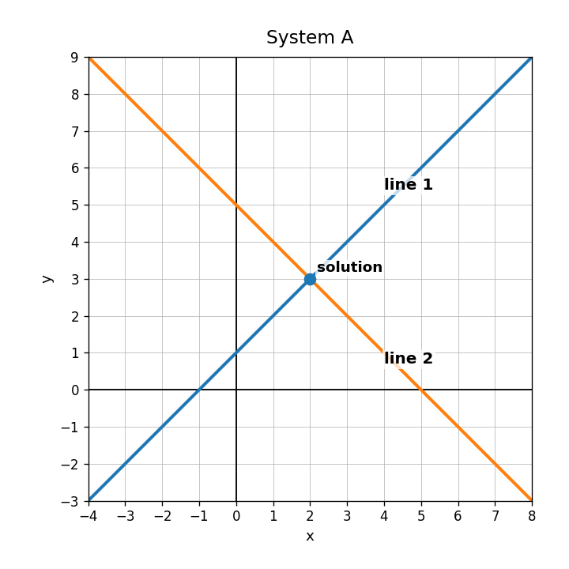
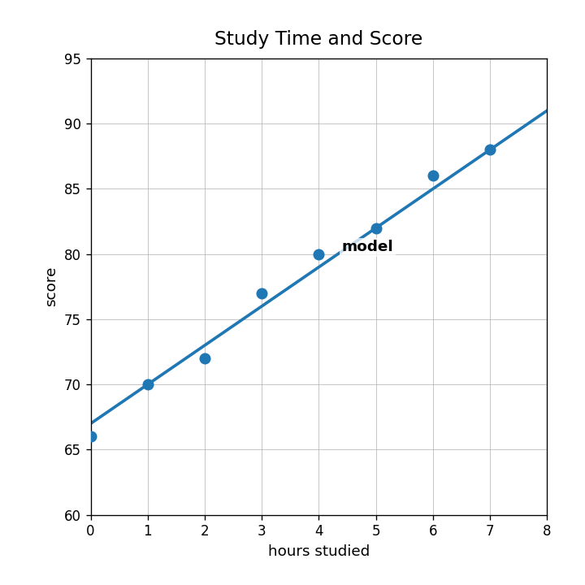
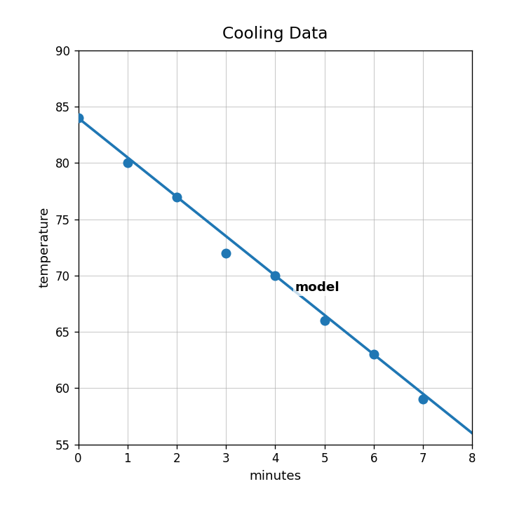
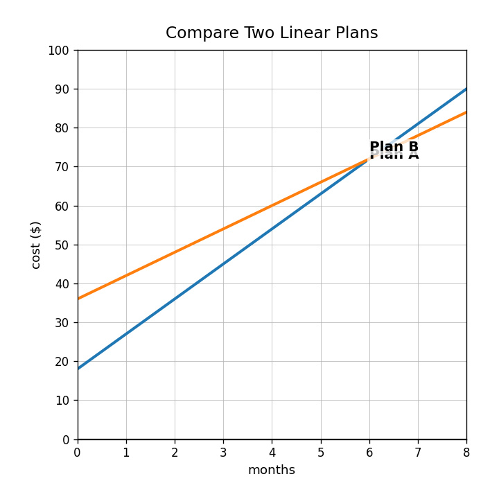

What does the solution to a system of equations represent on a graph?
Determine whether $(2,3)$ satisfies both equations: $y=x+1$ and $y=-x+5$.
Use the graph to identify the solution of the system. Then explain how you know.

Solve the system using elimination.
$$\begin{aligned}x+y&=8\\x-y&=2\end{aligned}$$
Describe the association shown in the scatterplot.

What is a line of fit used for?
In the model $S=3h+67$, what does the 3 represent?
When you use a line of fit to predict a value, is the prediction exact or estimated? Explain briefly.
Use the study model to estimate the score for 5 hours of study.
Compare the direction of association in the study graph and the cooling graph.

A model predicts 80, but the actual data value is 83. Explain whether the residual is positive or negative and what it means.
A student uses a line of fit from data with inputs 0 through 7 to predict the output at input 50. Critique the prediction.
Which model has the greater rate of change: $A=8x+12$ or $B=5x+30$?
Which model starts higher: $y=6x+28$ or $y=10x+4$?
| $x$ | 0 | 1 | 2 | 3 |
|---|---|---|---|---|
| Plan C | 18 | 25 | 32 | 39 |
Identify the starting value and rate of change.
Use the graph to compare the two plans at the beginning and after several months.
